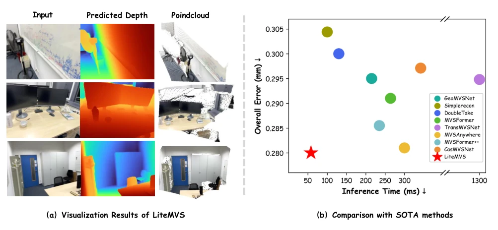
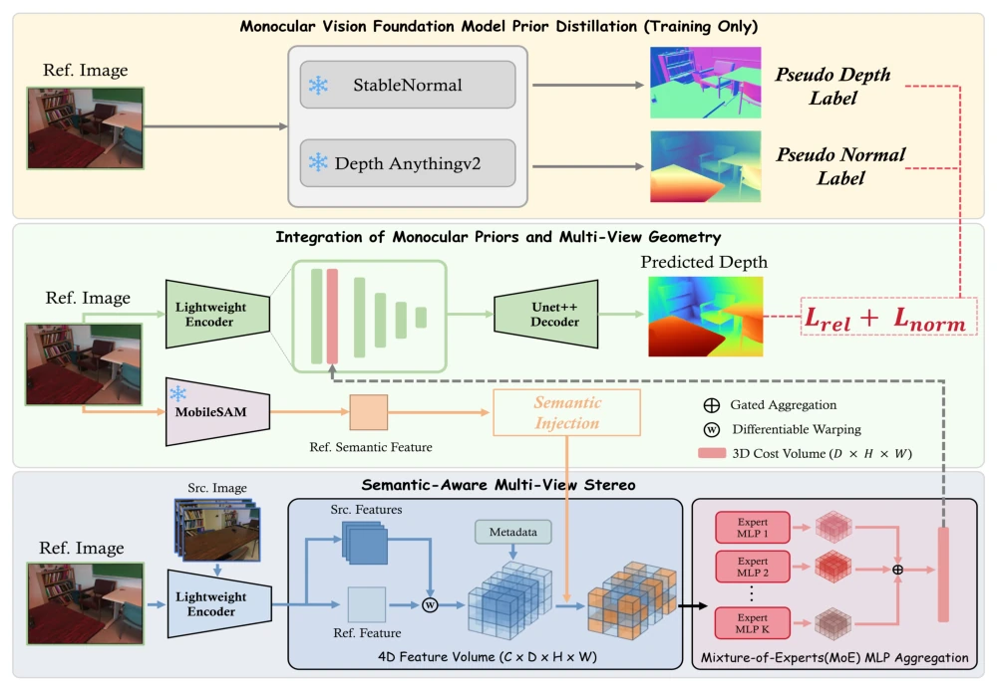
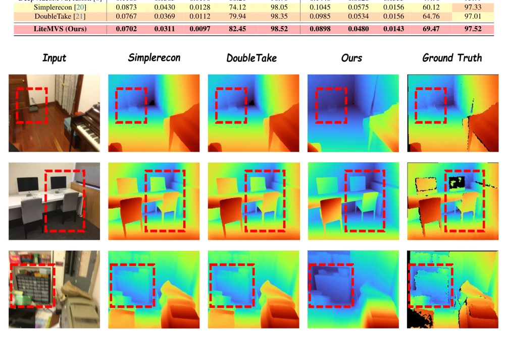
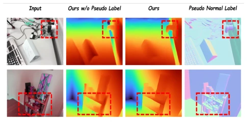

这篇论文给 MVS 领域又塞了一剂“大模型蒸馏”的强心针。LiteMVS 试图在轻量级架构里塞进 Foundation Model 的知识，听起来很美好，毕竟谁不想白嫖大模型的先验呢？它确实做到了在 ScanNet 上误差最低且速度飞快，这点值得点赞。但别高兴太早，它本质上还是靠蒸馏伪标签，推理时并没有真的跑大模型，属于“训练时吃香喝辣，推理时轻装上阵”。不过，对于具身智能来说，这种几何感知的表示能直接喂给 VLA 模型做抓取，倒是个实用的路子。只是作者也承认，遇到反光或透明物体还是歇菜，毕竟物理规律不是靠蒸馏就能完全搞定的。总的来说，是个性价比不错的工程化方案，但离“通用”还差口气。
This paper injects another "large model distillation" booster shot into the MVS field. LiteMVS attempts to embed Foundation Model knowledge into a lightweight architecture, which sounds appealing, after all, who wouldn't want to leverage large model priors for free? It indeed achieved the lowest error on ScanNet and operates at high speed, which deserves commendation. However, do not get too excited; essentially, it relies on distilling pseudo-labels, and during inference, it does not actually run the large model, akin to "thriving during training but traveling light during inference". Nevertheless, for embodied intelligence, this geometry-aware representation can be directly fed to VLA models for grasping, which is a practical approach. However, the authors also admit that it still fails when encountering reflective or transparent objects, after all, physical laws cannot be completely resolved through distillation alone. Overall, it is a cost-effective engineering solution, but still falls short of being "general-purpose".
Existing MVS methods mainly rely on geometric correspondences, easily failing in texture-less or repetitive areas [20, 21]. Although monocular depth models have strong priors, they lack multi-view geometric constraints. For robots and embodied intelligence, high-quality 3D geometry is not only the foundation of static reconstruction but also the key to learning spatiotemporal consistent 4D representations. Existing efficient MVS methods struggle to balance geometric accuracy and computational efficiency. Vision Foundation Models (such as Depth Anything v2 [29]) provide rich monocular priors, but direct integration increases inference costs. Therefore, how to design an efficient MVS framework, integrating strong semantic and geometric priors while maintaining low cost, becomes a key problem.

Figure 1. (a) Qualitative visualization results of LiteMVS, including the input images, predicted depth maps, and reconstructed point clouds on representative indoor scenes. LiteMVS produces geometrically consistent depth predictions and high-quality point cloud reconstructions with clear scene structures. (b) Comparison with SOTA methods in terms of overall error and inference time, where lower is better in both metrics. LiteMVS achieves the lowest overall error while maintaining the fastest inference speed, demonstrating a favorable trade-off between accuracy and efficiency.
The LiteMVS overall pipeline is based on plane-sweep geometry reasoning. First, a lightweight CNN encodes image features, while semantic descriptors are extracted via MobileSAM as monocular priors injected into the 4D feature volume to enhance boundary perception. Next, a plane-sweep feature volume is constructed, and source view features are warped to the reference view through differentiable homography transformations. The core innovation lies in the MoE cost aggregation module, which uses multiple expert MLPs to adaptively process different depth ranges, replacing a single shared MLP to improve geometric modeling flexibility. Specifically, the gating network predicts soft weights, with different experts focusing on different depth hypotheses to achieve efficient aggregation. Furthermore, knowledge distillation is introduced, utilizing Depth Anything V2 [29] and StableNormal [31] to generate relative depth and normal pseudo-labels as auxiliary supervision, transferring large model geometric priors to the lightweight model without additional overhead during inference. The loss function combines multi-view supervision and distillation loss to achieve end-to-end training.

Figure 2. Framework of LiteMVS. The pipeline consists of three components: (1) monocular vision foundation model distillation that generates pseudo depth and normal labels for training supervision; (2) semantic feature injection via MobileSAM to enhance the cost volume with scene-level context; and (3) semantic-aware multi-view stereo with a Mixture-of-Experts MLP for adaptive feature aggregation and robust depth prediction.
实验Experiments
在 ScanNetv2 和 7-Scenes 上评估，LiteMVS 在深度估计和 3D 重建指标上优于 SimpleRecon [20] 和 DoubleTake [21]，同时保持低延迟（75ms vs 72ms）。消融实验证明语义先验、MoE 和蒸馏均有效。在具身任务中，基于 SpatialForcing [16] 框架，在 LIBERO 基准上，LiteMVS 作为视觉表征与 VGGT [26] 相当，但推理速度更快（74ms vs 201ms）。这表明几何感知表征能有效迁移到操作任务。不过，作者也指出在反光、透明物体等模糊几何场景下仍有挑战。
Evaluated on ScanNetv2 and 7-Scenes, LiteMVS outperforms SimpleRecon [20] and DoubleTake [21] on depth estimation and 3D reconstruction metrics, while maintaining low latency (75ms vs 72ms). Ablation studies demonstrate that semantic priors, MoE, and distillation are all effective. In embodied tasks, based on the SpatialForcing [16] framework, on the LIBERO benchmark, LiteMVS as a visual representation is comparable to VGGT [26], but with faster inference speed (74ms vs 201ms). This indicates that geometry-aware representations can effectively transfer to manipulation tasks. However, the authors also point out that there are still challenges in ambiguous geometric scenes such as reflective or transparent objects.

Figure 3. Qualitative results of LiteMVS. LiteMVS produces accurate depth predictions with sharp object boundaries and consistent surface geometry, enabling high-quality 3D reconstruction across diverse indoor scenes. Compared to existing methods, fine-grained geometric details and boundary regions are better preserved, as highlighted in the red boxes.

Figure 4. Effectiveness of Pseudo-Label Distillation. Com- pared with the model trained without pseudo-label supervision, LiteMVS produces sharper object boundaries and more coherent depth transitions (highlighted by red boxes).